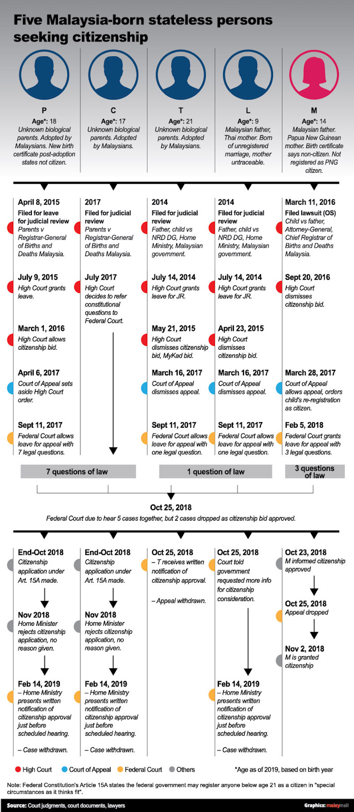
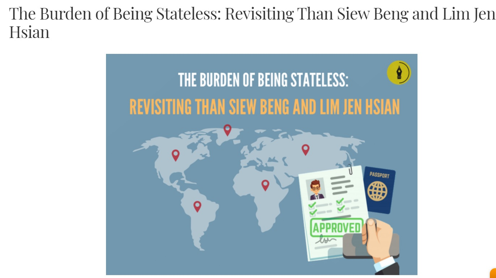

|  |
M's Case (Papua New Guinea) |
L's Case (Court of Appeal) |
P's Case (Court of Appeal) |
C's Case (Judicial review)
|
T's Case (Court of Appeal) |
|  |
The Burden of Being Stateless: Revisiting Than Siew Beng and Lim Jen Hsianby Mr Tan Kian Leong, a student of University College London |
|
|
Lew Yee Hong by Annou Xavier (High Court) |